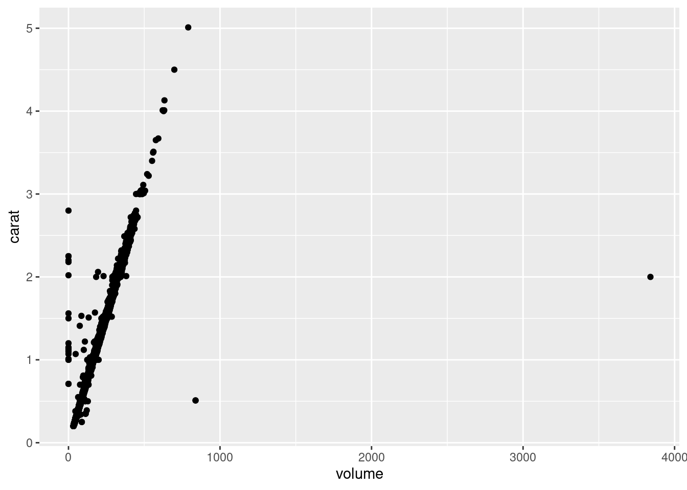

Bienvenue dans ce troisième module de la formation “Introduction au logiciel R”.
Nous y verrons :
Comment selectionner lignes d’un tableau de données
Comment selectionner les colonnes d’un tableau de données
Comment ajouter de nouvelles variables à un tableau de données
Dans ce module, vous apprendrez également à utiliser le package Tidyverse et le symbôle “pipe” : %>%
Préambule : le package tidyverse
La librairie Tidyverse a marqué un tournant dans l’histoire du logiciel R. Ce package qui regroupe en réalité un ensemble de librairies fonctionnant de concert a changer la manière de programmer dans R. On est passé d’une programmation dite fonctionnelle à une programmation en tunnel (pipe). Il a également permis de définir un jeu de fonctions très utiles pour la manipulation des données. Nous commencerons donc par son installation. Cela peut prendre un certain temps.
Par ailleurs, le package ggplot2 est nécessaire
install.packages("tidyverse")
Installation du package dans '/home/bdu/R/x86_64-pc-linux-gnu-library/4.4'
(car 'lib' n'est pas spécifié)
── Conflicts ────────────────────────────────────────── tidyverse_conflicts() ──
✖ purrr::%||%() masks base::%||%()
✖ dplyr::filter() masks stats::filter()
✖ dplyr::lag() masks stats::lag()
ℹ Use the conflicted package (<http://conflicted.r-lib.org/>) to force all conflicts to become errors
library(ggplot2)
Pour nous former à la manipulation de données, nous allons prendre comme un exemple un tableau de plus de 50 000 lignes qu’il serait difficile de manipuler dans un tableur classique.
Il s’agit du jeu de données “diamonds” dont les caractéristiques sont les suivantes :
help("diamonds")
1 Sélectionner les lignes d’un tableau
On appelle aussi cela un “filtre” car il s’agit de conserver uniquement les lignes vérifiant une condition logique. Prenons par exemple la qualité de la coupe du diamant : la variable cut.
La variable cut est un facteur ventilant les diamants selon 5 modalités :
levels(diamonds$cut)
[1] "Fair" "Good" "Very Good" "Premium" "Ideal"
On peut d’ailleurs dénombrer les diamants en fonction de ce facteur avec la fonction table()
table(diamonds$cut)
Fair Good Very Good Premium Ideal
1610 4906 12082 13791 21551
Pour filtrer un jeu de données, on utilisera la fonction filter(). En paramètre de cette fonction, on fournira la condition logique que l’on souhaite appliquer, par exemple :
cut == “Fair” pour conserver uniquement les diamants de qualité de coupe “Fair”
# Restriction du tableau aux diamants dont la coupe est "Fair"diamonds %>%filter(cut =="Fair", color =="E")
# A tibble: 224 × 10
carat cut color clarity depth table price x y z
<dbl> <ord> <ord> <ord> <dbl> <dbl> <int> <dbl> <dbl> <dbl>
1 0.22 Fair E VS2 65.1 61 337 3.87 3.78 2.49
2 0.86 Fair E SI2 55.1 69 2757 6.45 6.33 3.52
3 1.01 Fair E I1 64.5 58 2788 6.29 6.21 4.03
4 1.01 Fair E SI2 67.4 60 2797 6.19 6.05 4.13
5 0.57 Fair E VVS1 58.7 66 2805 5.34 5.43 3.16
6 0.96 Fair E SI2 53.1 63 2815 6.73 6.65 3.55
7 0.98 Fair E SI2 53.3 67 2855 6.82 6.74 3.61
8 1.01 Fair E SI2 67.6 57 2862 6.21 6.11 4.18
9 0.8 Fair E SI1 56.3 63 2885 6.22 6.14 3.48
10 0.71 Fair E VS2 64.6 59 2902 5.62 5.59 3.62
# ℹ 214 more rows
cut != “Fair” pour conserver uniquement les diamants dont la qualité de coupe n’est pas Fair.
# Restriction du tableau aux diamants dont la coupe n'est pas "Fair"diamonds %>%filter(cut !="Fair")
# A tibble: 52,330 × 10
carat cut color clarity depth table price x y z
<dbl> <ord> <ord> <ord> <dbl> <dbl> <int> <dbl> <dbl> <dbl>
1 0.23 Ideal E SI2 61.5 55 326 3.95 3.98 2.43
2 0.21 Premium E SI1 59.8 61 326 3.89 3.84 2.31
3 0.23 Good E VS1 56.9 65 327 4.05 4.07 2.31
4 0.29 Premium I VS2 62.4 58 334 4.2 4.23 2.63
5 0.31 Good J SI2 63.3 58 335 4.34 4.35 2.75
6 0.24 Very Good J VVS2 62.8 57 336 3.94 3.96 2.48
7 0.24 Very Good I VVS1 62.3 57 336 3.95 3.98 2.47
8 0.26 Very Good H SI1 61.9 55 337 4.07 4.11 2.53
9 0.23 Very Good H VS1 59.4 61 338 4 4.05 2.39
10 0.3 Good J SI1 64 55 339 4.25 4.28 2.73
# ℹ 52,320 more rows
cut %in% c(“Fair”,“Good”) pour avoir tous les diamants de la classe Fair ou Good
# Restriction du tableau aux diamants dont la coupe est "Fair" ou "Good"choix <-c("Fair","Good","Ideal")diamonds %>%filter(cut %in% choix)
# A tibble: 28,067 × 10
carat cut color clarity depth table price x y z
<dbl> <ord> <ord> <ord> <dbl> <dbl> <int> <dbl> <dbl> <dbl>
1 0.23 Ideal E SI2 61.5 55 326 3.95 3.98 2.43
2 0.23 Good E VS1 56.9 65 327 4.05 4.07 2.31
3 0.31 Good J SI2 63.3 58 335 4.34 4.35 2.75
4 0.22 Fair E VS2 65.1 61 337 3.87 3.78 2.49
5 0.3 Good J SI1 64 55 339 4.25 4.28 2.73
6 0.23 Ideal J VS1 62.8 56 340 3.93 3.9 2.46
7 0.31 Ideal J SI2 62.2 54 344 4.35 4.37 2.71
8 0.3 Ideal I SI2 62 54 348 4.31 4.34 2.68
9 0.3 Good J SI1 63.4 54 351 4.23 4.29 2.7
10 0.3 Good J SI1 63.8 56 351 4.23 4.26 2.71
# ℹ 28,057 more rows
Au passage, vous venez de faire connaissance :
avec le symbôle pipe %>%
avec le symbôle %in%
avec la fonction c()
Exercice d’acquisition :
Dans vos propres termes, décrivez ici en quelques lignes à quoi correspondent ces trois nouveaux éléments de code R :
Le symbôle %>% sert à brancher la sortie d'une fonction vers l'entrée d'une autre fonction
Le symbôle %in% est un connecteur logique qui représente l'appartenance à un ensemble d'elements
La fonction c() construit un vecteur à partir des elements en parametre
Exercice d’application :
On peut appliquer un filtre sur n’importe quelle variable, même si elle n’est pas un facteur. On peut par exemple appliquer un filtre sur une variable numérique.
Filtrez le tableau de données diamonds pour ne conserver que les diamants d’une valeur supérieure à 15 000$
# A tibble: 1,655 × 10
carat cut color clarity depth table price x y z
<dbl> <ord> <ord> <ord> <dbl> <dbl> <int> <dbl> <dbl> <dbl>
1 1.54 Premium E VS2 62.3 58 15002 7.31 7.39 4.58
2 1.19 Ideal F VVS1 61.5 55 15005 6.82 6.84 4.2
3 2.1 Premium I SI1 61.5 57 15007 8.25 8.21 5.06
4 1.69 Ideal D SI1 60.8 57 15011 7.69 7.71 4.68
5 1.5 Very Good G VVS2 62.9 56 15013 7.22 7.32 4.57
6 1.73 Very Good G VS1 62.8 57 15014 7.57 7.72 4.8
7 2.02 Premium G SI2 63 59 15014 8.05 7.95 5.03
8 2.05 Very Good F SI2 61.9 56 15017 8.13 8.18 5.05
9 1.5 Very Good F VS1 61.6 58 15022 7.35 7.43 4.55
10 1.82 Very Good G SI1 62.7 58 15025 7.68 7.75 4.84
# ℹ 1,645 more rows
Combien de diamants on un prix supérieur à 15 000$ ?
2 Sélectionner les colonnes d’un tableau
Le package Tidyverse fournit également une fonction très utile pour sélectionner les colonnes d’un tableau : la fonction select(). Cette fonction permet par exemple de sélectionner :
Une ou plusieurs colonnes par leur nom
Toutes les colonnes sauf une ou plusieurs
Toutes les colonnes commençant ou finissant par le même préfixe (resp. suffixe)
Toutes les colonnes contenant une chaîne de caractère
etc. (voir toutes les possibilités dans l’aide de la fonction select)
Voici quelques exemples :
Sélection d’un sous-ensemble de colonnes par leur nom
#Selection des colonnes Cut, Clarity et Pricediamonds %>%select(cut, clarity, price)
# A tibble: 53,940 × 3
cut clarity price
<ord> <ord> <int>
1 Ideal SI2 326
2 Premium SI1 326
3 Good VS1 327
4 Premium VS2 334
5 Good SI2 335
6 Very Good VVS2 336
7 Very Good VVS1 336
8 Very Good SI1 337
9 Fair VS2 337
10 Very Good VS1 338
# ℹ 53,930 more rows
#Remarque : les noms des colonnes ne sont pas entre guillemets
Sélection de toutes les colonnes sauf certaines par leur nom :
# Selection des colonnes Cut, Clarity et Price en utilisant le symbole -diamonds %>%select(-cut, -clarity, -price)
# A tibble: 53,940 × 7
carat color depth table x y z
<dbl> <ord> <dbl> <dbl> <dbl> <dbl> <dbl>
1 0.23 E 61.5 55 3.95 3.98 2.43
2 0.21 E 59.8 61 3.89 3.84 2.31
3 0.23 E 56.9 65 4.05 4.07 2.31
4 0.29 I 62.4 58 4.2 4.23 2.63
5 0.31 J 63.3 58 4.34 4.35 2.75
6 0.24 J 62.8 57 3.94 3.96 2.48
7 0.24 I 62.3 57 3.95 3.98 2.47
8 0.26 H 61.9 55 4.07 4.11 2.53
9 0.22 E 65.1 61 3.87 3.78 2.49
10 0.23 H 59.4 61 4 4.05 2.39
# ℹ 53,930 more rows
# Selection des colonnes Cut, Clarity et Price en utilisant le symbole ! et la fonction c()diamonds %>%select(!c(cut, clarity, price))
# A tibble: 53,940 × 7
carat color depth table x y z
<dbl> <ord> <dbl> <dbl> <dbl> <dbl> <dbl>
1 0.23 E 61.5 55 3.95 3.98 2.43
2 0.21 E 59.8 61 3.89 3.84 2.31
3 0.23 E 56.9 65 4.05 4.07 2.31
4 0.29 I 62.4 58 4.2 4.23 2.63
5 0.31 J 63.3 58 4.34 4.35 2.75
6 0.24 J 62.8 57 3.94 3.96 2.48
7 0.24 I 62.3 57 3.95 3.98 2.47
8 0.26 H 61.9 55 4.07 4.11 2.53
9 0.22 E 65.1 61 3.87 3.78 2.49
10 0.23 H 59.4 61 4 4.05 2.39
# ℹ 53,930 more rows
Sélection de toutes les colonnes commençant par une chaîne de caractère donnée :
# Selection de toutes les colonnes commençant par la lettre "c"diamonds %>%select(starts_with("c")) # la chaine de caractère est entre guillements
# A tibble: 53,940 × 4
carat cut color clarity
<dbl> <ord> <ord> <ord>
1 0.23 Ideal E SI2
2 0.21 Premium E SI1
3 0.23 Good E VS1
4 0.29 Premium I VS2
5 0.31 Good J SI2
6 0.24 Very Good J VVS2
7 0.24 Very Good I VVS1
8 0.26 Very Good H SI1
9 0.22 Fair E VS2
10 0.23 Very Good H VS1
# ℹ 53,930 more rows
Exercice d’application :
A partir du dataset diamonds, créez un tableau contenant uniquement les dimensions (x,y et z) ainsi que le prix des diamants ayant une découpe (cut) idéale (Ideal)
# Ecrivez votre code ici :
Quelles sont les dimensions de ce nouveau jeu de données ?
3 Ajouter de nouvelles variables à un tableau de données
En analyse de données, il est fréquent d’avoir à calculer des variables intermédiaires, aussi appelée “features” en data mining. C’est notamment le cas lorsque les variables de départ nécessitent d’être combinées pour correspondre à une valeur intéressante du point de vue de l’analyse.
Par exemple, le dataset diamonds donne la taille des diamants dans les trois dimensions de l’espace (variables x, y, z). Prises individuellement, ces variables ont peut d’intérêt. Il est en revanche possible de les combiner pour obtenir une estimation du volume des diamants.
Ce que l’on souhaite ici, c’est calculer le volume estimatif des diamants et d’ajouter cette valeur au tableau de données pour pouvoir s’en servir par la suite. On utilise pour cela la fonction mutate()
# Ajout de la colonne "volume" au dataset diamonds avec la fonction mutatediamonds %>%mutate(volume = x * y * z) #le nom de la colonne n'est pas entre guillemets
# A tibble: 53,940 × 11
carat cut color clarity depth table price x y z volume
<dbl> <ord> <ord> <ord> <dbl> <dbl> <int> <dbl> <dbl> <dbl> <dbl>
1 0.23 Ideal E SI2 61.5 55 326 3.95 3.98 2.43 38.2
2 0.21 Premium E SI1 59.8 61 326 3.89 3.84 2.31 34.5
3 0.23 Good E VS1 56.9 65 327 4.05 4.07 2.31 38.1
4 0.29 Premium I VS2 62.4 58 334 4.2 4.23 2.63 46.7
5 0.31 Good J SI2 63.3 58 335 4.34 4.35 2.75 51.9
6 0.24 Very Good J VVS2 62.8 57 336 3.94 3.96 2.48 38.7
7 0.24 Very Good I VVS1 62.3 57 336 3.95 3.98 2.47 38.8
8 0.26 Very Good H SI1 61.9 55 337 4.07 4.11 2.53 42.3
9 0.22 Fair E VS2 65.1 61 337 3.87 3.78 2.49 36.4
10 0.23 Very Good H VS1 59.4 61 338 4 4.05 2.39 38.7
# ℹ 53,930 more rows
On peut ensuite utiliser cette nouvelle colonne dans la suite des opérations, par exemple pour afficher le poids des diamants en fonction de l’estimation de leur volume :
# Scatter plot du poids des diamants en fonction de leur volumediamonds %>%mutate(volume = x * y * z) %>%ggplot() +# Attention à ne pas confondre le + de ggplot et %>%geom_point(aes(x=volume, y = carat))

Quelquechose vous surprend dans le graphique obtenu ? A quoi est-ce dû selon vous ?
Exercice d’application :
A partir du dataset diamonds :
calculez le volume estimatif des diamants à part de leurs dimensions x, y et z
filtrez (supprimez) les diamants ayant un volume inférieur à 10 mm3 ou supérieur à 1000 mm3
visualiser le prix des diamants (price) en fonction de leur volume
asservissez la couleur des points du graphique à la clarté (clarity) des diamants
# Ecrivez votre code ici :
Quelle clarté de diamant est la plus appréciée des acheteurs ?
Proposez une visualisation plus claire pour illustrer cette tendance à l’aide de la géométrie histogramme vue précédemment.